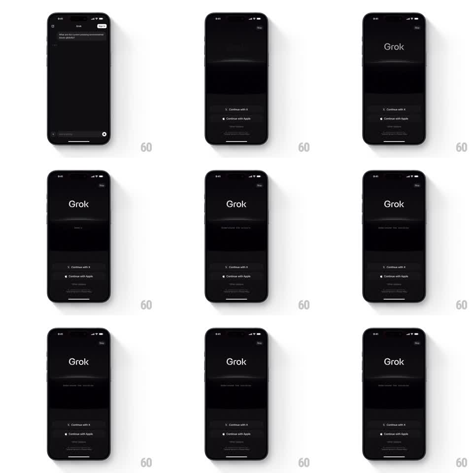

Media
Frame-by-frame

Rebuild this animation 1:1: Grok's sign-in intro - the wordmark fades in over a glowing horizon, and a subtitle types itself out character by character.

Rebuild this animation 1:1: Grok's sign-in intro - the wordmark fades in over a glowing horizon, and a subtitle types itself out character by character. ## Integration Integration: stack-agnostic spec - springs given as stiffness/damping, timed motions as duration + curve; map every value to your framework and animation library of choice. ## Scene Near-black screen: a faint glowing horizon arc across the upper third, "Grok" wordmark centered above it, a small subtitle below the mark, and a lower sheet with Continue with X / Continue with Apple buttons. ## Motion spec Pattern: ambient intro with typewriter subtitle, ~3s. - The horizon glow fades up first (600ms, ease-out), a thin bright arc with a soft bloom above it. - The wordmark fades in over the arc (500ms, slight 8px rise), holding as the anchor. - The subtitle types itself out character by character (~40ms per character, even cadence) with no cursor, then holds; on longer loops it can cycle phrases, fading the old line out (250ms) before typing the next. - The buttons sheet rises from the bottom and settles (spring stiffness 240 damping 22) once the subtitle has started, so the screen never feels empty waiting for text. - The horizon keeps a faint slow pulse (opacity +-10%, 3s sine) as the idle state. ## Calibration - Typing cadence is even and machine-steady; variable human-like pauses read as jank here. - The buttons never wait for the typing to finish - the sheet overlaps the text sequence. ## Reduced motion All elements fade in fully formed; no typing. ## Don't miss - The subtitle sits dimmer and smaller than the wordmark - the hierarchy must survive the animation. - The horizon glow is behind the wordmark, never clipping or crossing it.